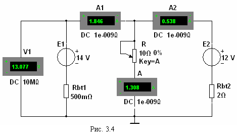

Задание 2. Запустить лабораторный
комплекс Labworks и среду МS10 (щёлкнув мышью на команде Эксперимент меню комплекса Labworks). Открыть файл 3.4.ms10, размещённый в папке Circuit Design Suitе 10.0 среды МS10, или собрать
на
рабочем поле среды MS10 схему для испытания двухконтурной схемы цепи
постоянного тока (рис. 3.4).
Установить в диалоговых окнах компонентов их параметры или режимы
работы:
-
значения параметров элементов схемы цепи;

- режим DC
работы приборов; внутренние сопротивления амперметров RA = 1 нОм, а
вольтметра RV = 10 МОм.
Запустить программу (щелкнув мышью на цифре 1 кнопки )
и записать показания приборов в
столбец табл. 3.1 при сопротивлении нагрузки R = 10 + N, Ом.